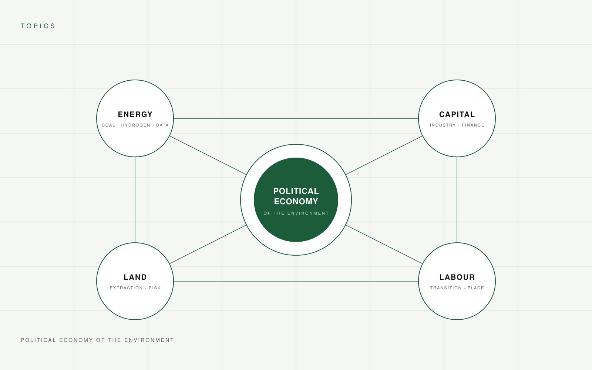
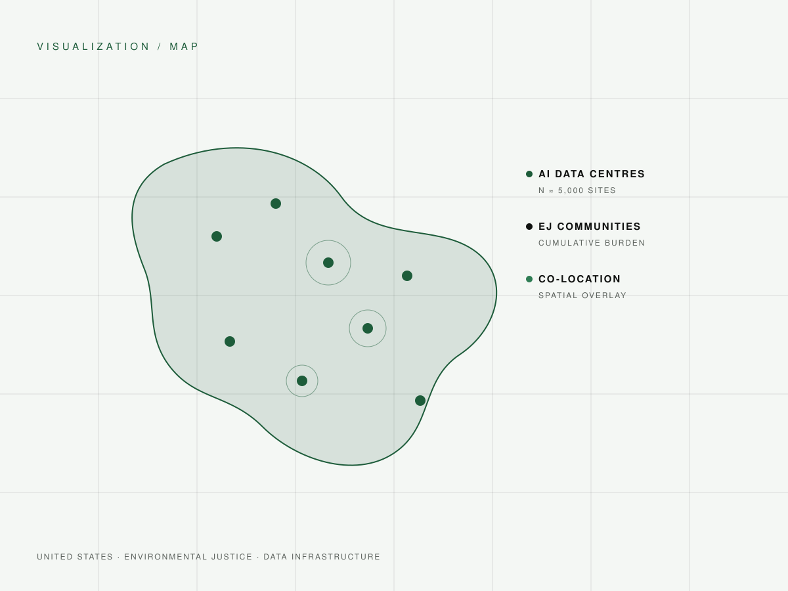
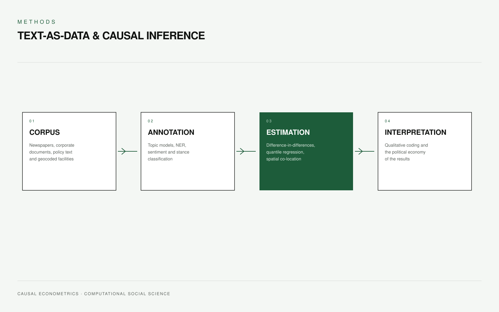

02 Research
Topics & methods
My research sits at the intersection of environmental economics, economic geography, and computational social science. Across projects, I ask how power and production relations shape environmental harm — and what that means for the possibility of a just transition.
What is the political economy of the environment?
The political economy of the environment studies how economic institutions, production relations, and political power shape environmental outcomes and the distribution of environmental harm. It asks not only whether decarbonisation happens, but who pays for it, who benefits, and which interests are organised to slow it down.
My work connects three bodies of scholarship: environmental and ecological economics, economic geography and the study of left-behind places, and the political economy of climate obstruction. Methodologically, I combine causal econometrics with text-as-data and qualitative methods.

Selected project
Mapping AI data centre siting in environmental justice communities

Climate obstruction and the politics of delay
I study the strategies through which fossil fuel incumbents and their allies delay climate action. Recent work traces the shift from explicit denial to what the literature calls climate obstruction: investments in speculative low-carbon technologies, greenwashing, and the capture of policy agendas.
With Thomas Klug and Carmen Garro, I analyse 4,479 internal documents from five major U.S. fossil fuel firms submitted to the House Oversight Committee. Combining named entity recognition with qualitative coding, we trace connections between “low-carbon” projects, political and academic collaborators, and resistance from environmental justice communities.
Related work examines orthodox economic ideas as an obstacle to climate policy and the media politics of just transition in South Africa and India. Across these projects, the question is how particular framings make some futures appear feasible — and others unthinkable.
Just transitions and left-behind places
Phasing out fossil fuels is as much a problem of political economy as of technology. I study how transition narratives are produced and contested, how shifts in coal employment shape voting behaviour, and how environmental inequality compounds regional economic deprivation.
This work spans Colombia, South Africa, India, and Europe. It draws on survey experiments, causal econometrics, and comparative political economy, and it engages with the concept of left-behind places — territories where industrial lock-in, pollution, and economic decline reinforce one another.
A central finding across this work is that compensation and participation are not secondary questions. Without credible policy design, transition policies can reproduce the very inequalities they aim to address.
The geography of large-scale industry
Large-scale industries concentrate benefits and harms in particular places. I map the geography of toxic facilities, industrial brownfields, and new energy infrastructures — including AI data centres — and analyse who bears the burden.
A central question is whether the low-carbon transition reproduces existing sacrifice zones or creates new ones. I work with facility-level pollution data from the European Pollutant Release and Transfer Register, brownfield registers, and geocoded data-centre locations, often in collaboration with environmental justice researchers and advocates.
Current projects examine the co-location of AI data centres with communities facing cumulative environmental burden in the United States, and the conflicts that emerge around hydrogen and critical-mineral projects.
Text-as-data and computational methods
I build text-as-data pipelines that combine topic modelling, named entity recognition, sentiment analysis, and supervised stance classification with close qualitative reading. This allows me to trace how actor positions, frames, and conflicts evolve across large newspaper corpora in multiple languages.
I pair these methods with causal designs — difference-in-differences, quantile regression, and spatial co-location analysis — to move from description to identification. I am particularly interested in what computational methods can and cannot tell us about discursive power.
03 / Methods
How I work

- Causal econometrics — difference-in-differences, quantile regression, panel models, and spatial analysis of geocoded facility data.
- Text-as-data — structural and dynamic topic models, named entity recognition, sentiment analysis, and supervised stance classification.
- Qualitative methods — elite interviews, document coding, process tracing, and collaborative work with environmental justice organisations.
- Research design — survey experiments, pre-registration, and mixed-methods triangulation.